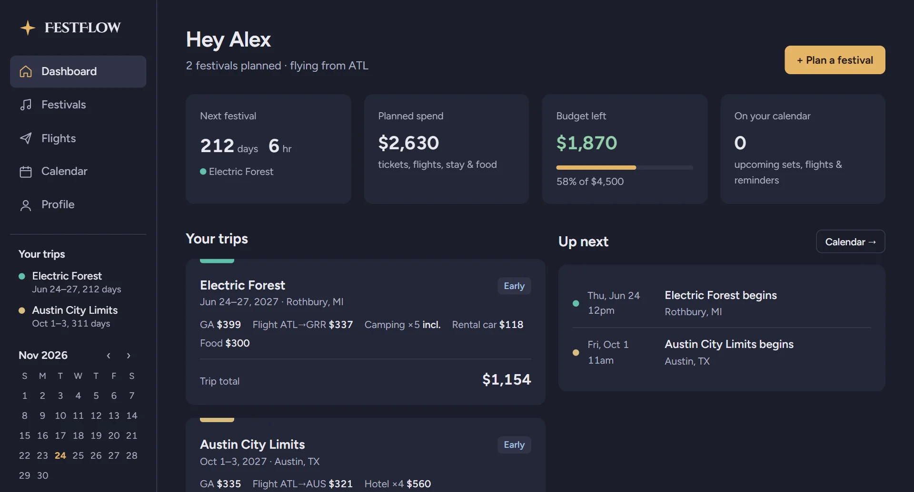

FestFlow
Plans a festival trip and adds up the real cost: ticket, travel, stay and food. It splits shared costs across the group and works out who pays whom back. A Node server with no dependencies hides the API key and caches prices for six hours.
JavaScript, Node, SerpApi
FestFlow code